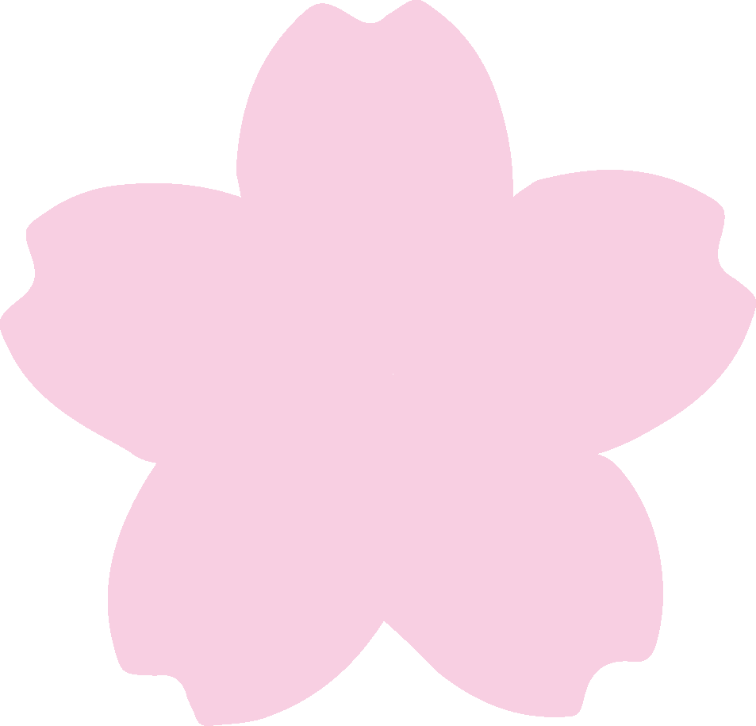
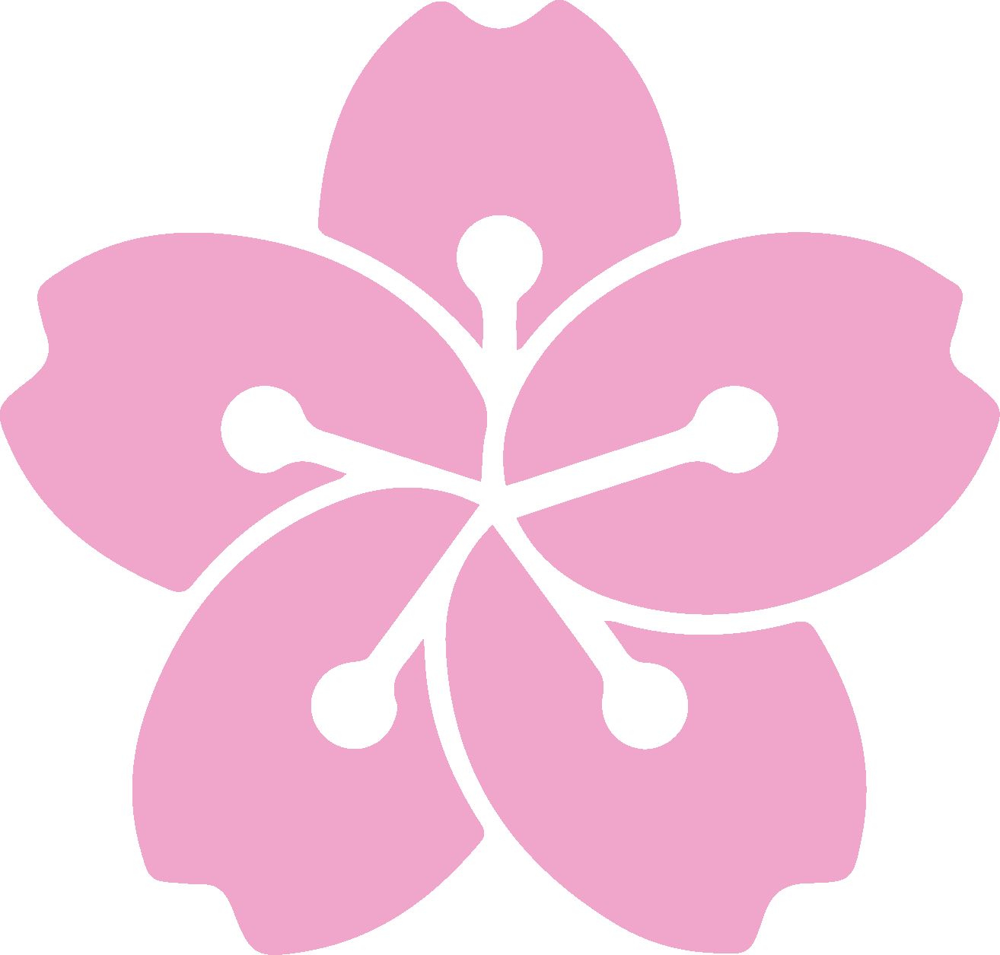
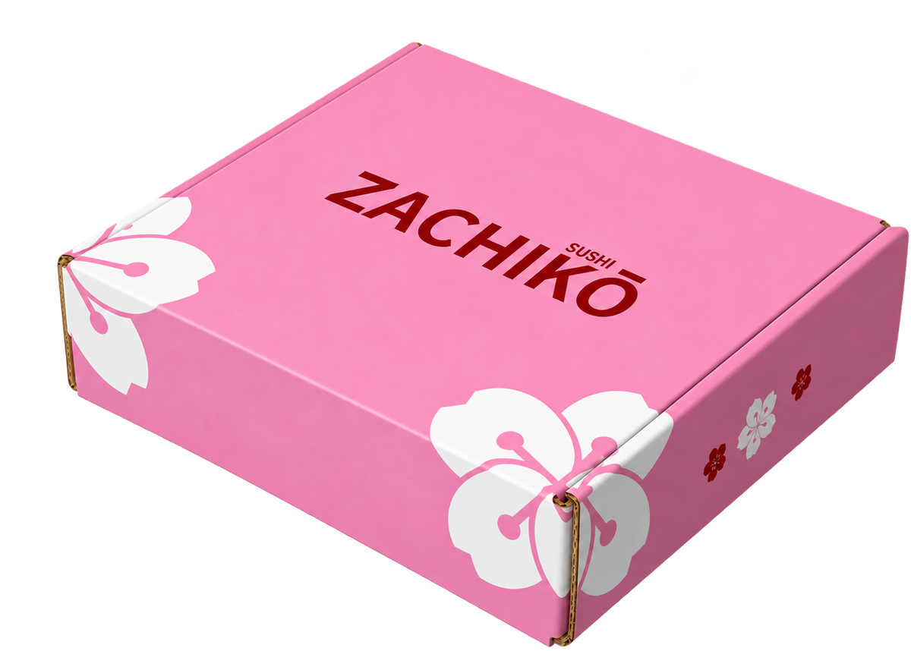
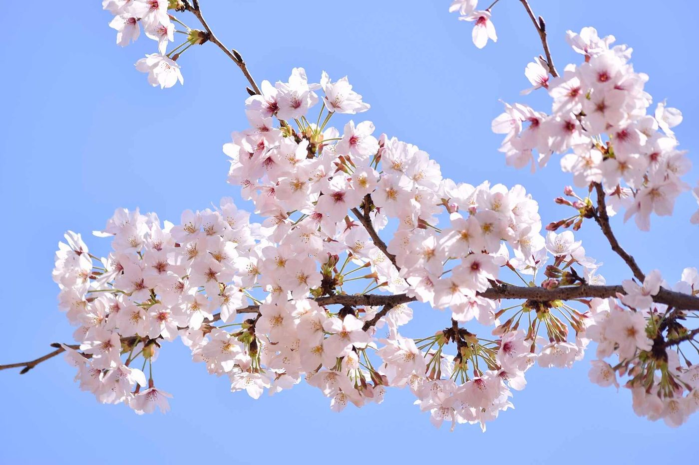
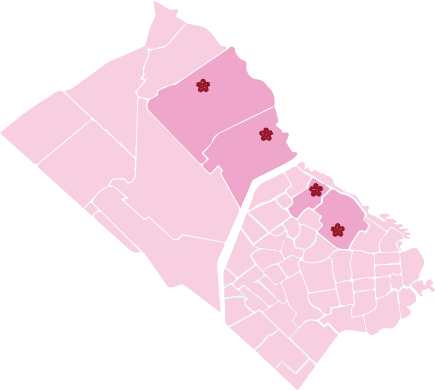

Edición limitada · 01.02 — 30.04.2027
Temporada Sakura
Tres combos de 25 piezas para celebrar la floración del cerezo, en nuestra caja de edición especial.


Quiénes somos
Somos Zachikō.
Cada año, celebramos la flor.
Somos una cadena de sushi de Buenos Aires con cuatro locales en Palermo, Belgrano, Vicente López y San Isidro. Además de lo que servimos todos los días, cada año conmemoramos el sakura: la floración del cerezo en Japón.
Allá el cerezo florece de sur a norte, y cada árbol dura en flor apenas una semana. Por eso existe el hanami, la costumbre de reunirse a comer bajo los árboles antes de que caigan los pétalos. Nuestra temporada sigue ese mismo recorrido: del 1 de febrero al 30 de abril, un combo por mes y un regalo el día que florece cada ciudad.
Combos de temporada
Tres boxes, 25 piezas cada uno.
Todos traen 10 Sakura Roll, la pieza de la temporada, y 15 piezas que cambian según el momento de la flor.
Regalo de temporada
Agendate estas fechas
y sé de los primeros en recibir un regalo especial.
Los primeros 25 clientes de cada local que pidan un combo Sakura se llevan una servilleta bordada.
Lo que va en cada box
Nuestras piezas.
Sucursales
Cuatro locales, un mismo cerezo.
Tocá una flor del mapa para ver la dirección, el horario y cómo pedir.
